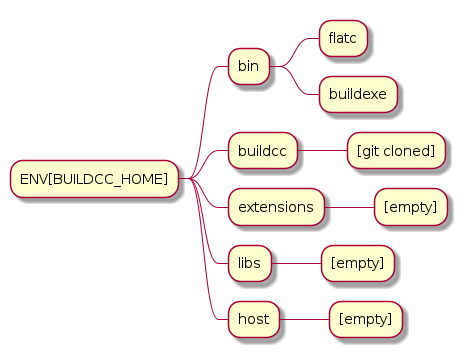
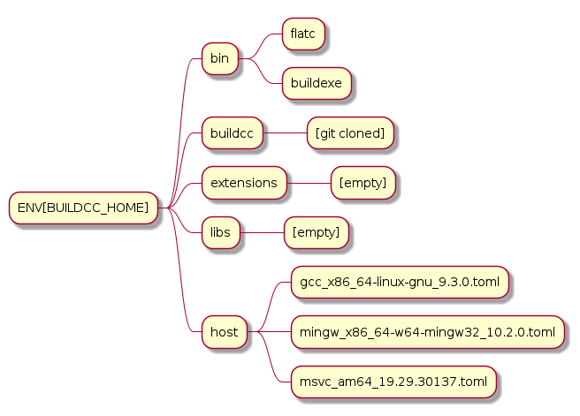
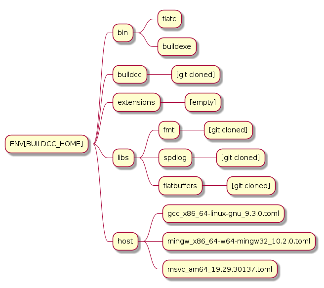

BuildExe Setup¶
ENV[BUILDCC_HOME]¶
Add the environment variable
BUILDCC_HOMEwith the absolute path on the operating system. For example:BUILDCC_HOME=C:\buildccorBUILDCC_HOME=/local/mnt/buildcc- Create directories bin, extensions, libs and host inside your ENV[BUILDCC_HOME] directory
Download BuildExe_Win.zip or BuildExe_Linux.zip and unzip the bin file contents into the bin folder
extensions and libs folder will be empty for the time being
- Update your
PATHvariable with the bin folder. For example:
PATH += ENV[BUILDCC_HOME]/bin;ENV[PATH]Linux :
export PATH="$BUILDCC_HOME/bin:$PATH"Windows : My Computer -> Properties -> Advanced System Settings -> Environment Variables -> [Update your system variables]
- Update your
Git clone the buildcc project in the ENV[BUILDCC_HOME] directory.
git clone https://github.com/coder137/build_in_cpp.git buildcc
git submodule init
git submodule update
To update just do the following
git pull
git submodule init
git submodule update
Your ENV[BUILDCC_HOME] directory should look like the following

Host Toolchains¶
From the above map we can see that the host folder is empty
This folder will contain the .toml files of all the HOST toolchains present on your system.
1[toolchain.host]
2# Toolchain family id
3# valid options are: gcc, msvc, mingw
4# clang is not yet supported
5id = "gcc"
6
7# NOTE: Each name MUST be unique
8# Preferrably use the [id]_[target_arch]_[compiler_version] for uniqueness,
9# but make sure the name is unique if you have multiple similar host toolchains installed on your system
10name = "gcc_x86_64-linux-gnu_9.3.0"
11
12# Make sure all of these executables are present when you install your toolchain
13asm_compiler = "as"
14c_compiler = "gcc"
15cpp_compiler = "g++"
16archiver = "ar"
17linker = "ld"
18
19# Additional information
20# Necessary if multiple similar toolchains are installed
21# For example. Installed gcc version 9.3.0 and 10.2.0
22path = "/usr/bin"
23compiler_version = "9.3.0"
24target_arch = "x86_64-linux-gnu"
Important
For Windows, make sure to use vcvarsall.bat [flavour] to activate your toolchain
Your ENV[BUILDCC_HOME] directory should look like the following

Libs¶
Any library that the user needs to use in their projects can be git cloned into the libs folder.
BuildExe can then be used to compile the library build files along with the “script”.
The library build files define how a particular library is built.
These functions can be used in the “script” to define how your target should be built.
In this way we achieve a package manager like functionality with BuildExe and git. (Local package manager)
For example we download the fmt library to our libs folder
cd $BUILDCC_HOME/libs
git clone https://github.com/fmtlib/fmt.git
Important
This might sound strange, but the git cloned library folder name must also be a valid C++ variable name.
Since the fmt lib does not have support for BuildCC style build files we write our own
Please see the BuildExe as a Package Manager document for a simple example.

Extensions¶
Note
Extensions support in BuildExe is incomplete and there currently aren’t any third party extensions for BuildCC.